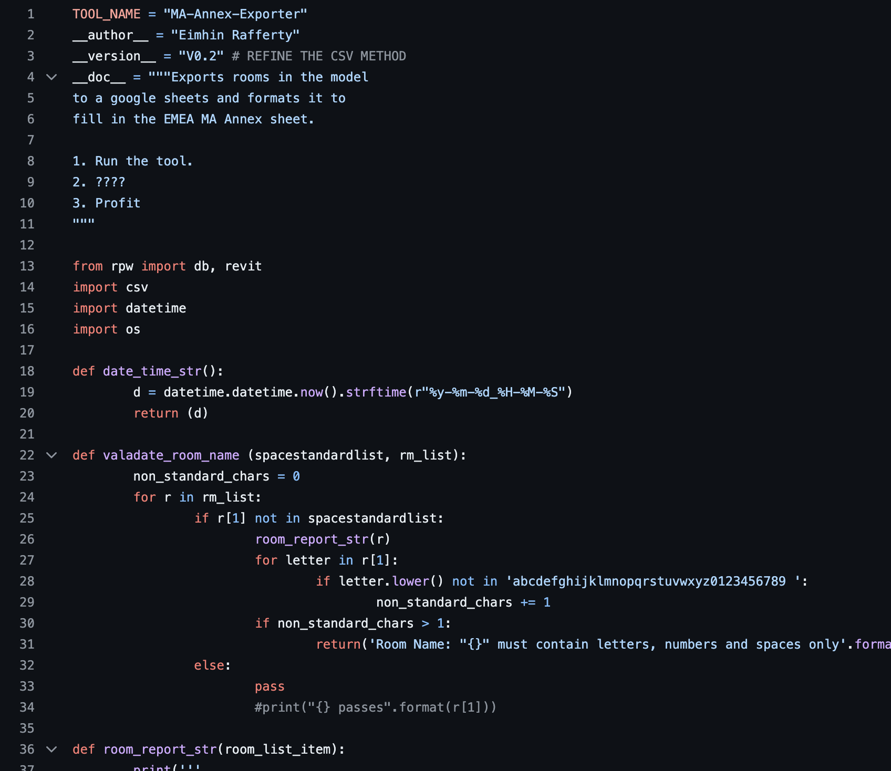
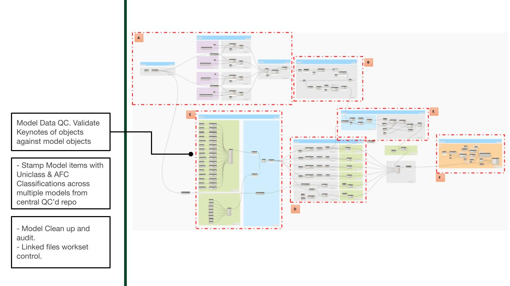
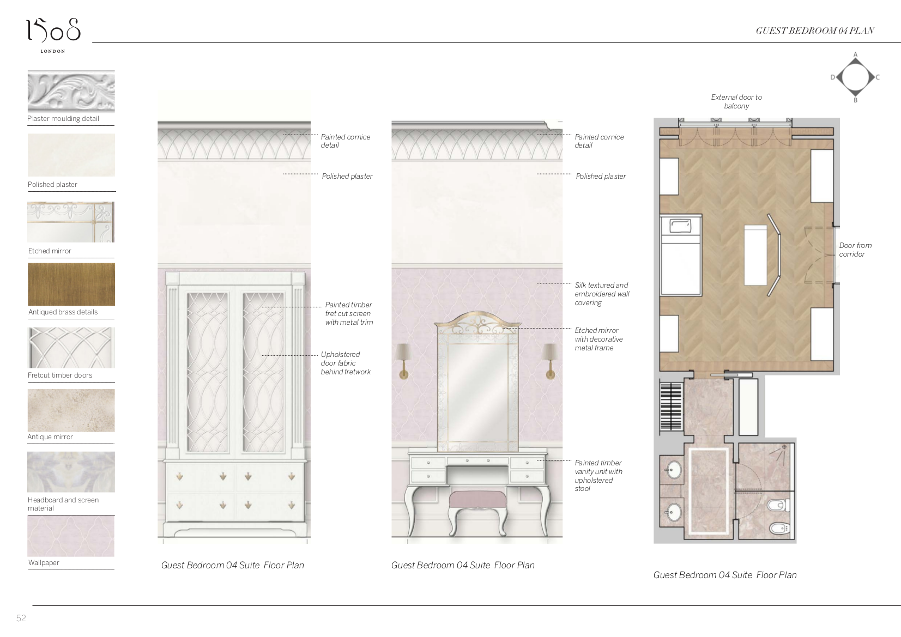
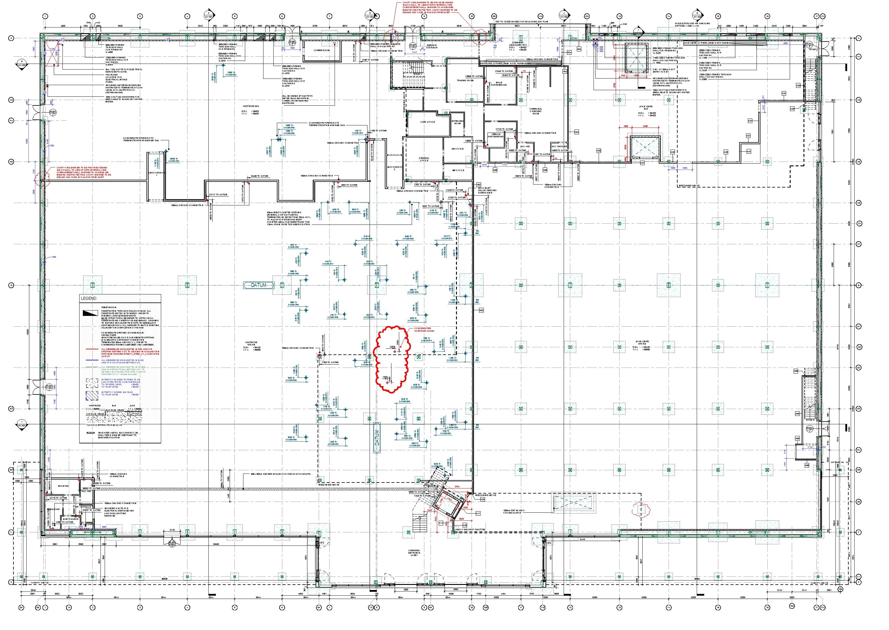

Eimhin Rafferty • Architect Portfolio
WeWork • Product Manager, Design Technology
** 07/2018 - 12/2022 **
WeWork provides flexible workspace solutions for businesses of all sizes, from freelancers to Fortune 500 companies. Offering private offices, coworking memberships, and on-demand meeting rooms, WeWork creates environments that foster productivity and innovation. With locations worldwide, WeWork integrates technology, community, and design to support your professional needs, whether you require a dedicated desk or a turnkey office.
Entreprise Projects
Parnassus Tower Amsterdam

Amazon Hannover Building, Manchester

BIM at WeWork
WeWork uses Autodesk building information modeling (BIM) software throughout the building lifecycle to help keep pace with the growing demand for collaborative office space around the world.
Reality Capture - BIM for existing conditions
Capturing accurate as-built data as the first step of design
WeWork uses reality capture and BIM solutions to support the design and construction of its WeWork offices, including ReCap, Revit, and Dynamo software. The firm uses 3D laser scanners to capture the existing conditions of a newly acquired space. The resulting point clouds are combined and edited in ReCap to visualize and navigate the existing conditions data.
This data is used in Revit to guide WeWork’s modeling efforts as it develops a series of design options. The firm uses Dynamo and Revit API to embed cost and sales data from its business systems in the models in order to analyze revenue versus cost and other key business metrics.


Tooled up BIM, PyRevit, Dynamo, Google Apps Scripts
As the design progresses, WeWork scans the space and references that data to quickly generate a more detailed design model and coordinate its design with existing structure and services. This highly-coordinated, precise 3D model offers increased use of prefabrication and offsite assembly, helping to minimize onsite rework and avoid delays during construction.
In addition, the intelligent Revit design model drives WeWork’s supply chain. With Revit, the project team is able to produce all of their drawings and quantities automatically, so all estimating and bidding is based on the design model and surprises are minimized during construction.



/* Examples of simple SQL which enabled us to dive into our building data and
answer questions such as 'hey how many MOP rooms are there in Florida?' */
select
s.UUID,
s.floor_uuid,
s.ROOM_NUMBER,
s.DESIGNED_AS_SPACE_TYPE,
s.SQUARE_FOOTAGE,
s.WORK_UNITS,
s.DESK_COUNT,
s.HAS_WINDOW,
s.RGS_SPACE_TYPE,
f.LABEL,
f.UUID,
f.BUILDING_UUID,
f.SPACE_FIRST_PHYSICAL_OPEN_DATE,
b.COUNTRY,
b.STATE,
b.CITY,
b.ADDRESS_LINE,
b.NAME,
b.UUID
FROM CENTRAL.CDM_PHYSICAL_SPACE.SPACE AS s
INNER JOIN CENTRAL.CDM_PHYSICAL_SPACE.FLOOR AS f on f.UUID = s.floor_uuid
INNER JOIN CENTRAL.CDM_PHYSICAL_SPACE.BUILDING AS b on b.uuid = f.BUILDING_UUID
WHERE s.DESIGNED_AS_SPACE_TYPE ='MOP'
AND s.SQUARE_FOOTAGE BETWEEN 900 AND 1100
AND b.STATE LIKE 'Florida'
ORDER BY s.SQUARE_FOOTAGE DESCDesign Standards Content + Process + Traning
- Initiative to give teams the tools to implement design standards.
- Self documenting content.
- Reliable, maintainable, version controled documentation.
- Formed the basis of consultant onboarding.


Pascall + Watson • Building Information Model Coordinator
11/2016 - 07/2018
Pascall+Watson Architects, founded in 1956, is an international architecture and design firm known for its innovative and sustainable solutions. With studios across the UK, Europe, and the Middle East, they specialize in diverse sectors including aviation, education, healthcare, and leisure. Their collaborative approach ensures each project reflects the client’s vision, creating impactful spaces that serve communities. Pascall+Watson is committed to environmental and social responsibility, continually pushing the boundaries of what’s possible in architecture and design.
Due to the confidential nature of this project, information shared here is limited to what is publicly available.
Addressing the Uniquely Challenging Nature of London City Airport
London City Airport stands out as a uniquely challenging site and project for several reasons:
- Location Constraints:
- Urban Setting: Located in the heart of London, the airport is surrounded by residential and commercial buildings. This urban setting imposes strict noise and height restrictions, demanding innovative design and operational strategies.
- Limited Space: The airport is built on a relatively small footprint compared to other major airports. This limitation requires efficient space utilization for runways, taxiways, terminals, and other facilities.
- Operational Complexity:
- Short Runway: The airport has one of the shortest commercial runways in the world, at just 1,508 meters (4,948 feet). This necessitates precise and careful landing and takeoff procedures, often requiring aircraft modifications and specialized pilot training.
- Regulatory and Community Engagement:
- Strict Regulations: Operating within one of the world’s most regulated airspaces means compliance with numerous aviation, safety, and environmental regulations. Navigating these regulations while maintaining efficient operations requires meticulous planning and execution.
- Community Relations: The airport must actively engage with the local community to address concerns related to noise, traffic, and environmental impact. Building and maintaining good relations with the community is vital for its ongoing operations and potential expansion projects.
- Innovative Solutions:
- Technological Advancements: To address these challenges, the airport incorporates state-of-the-art technologies in air traffic management, security, and passenger services. Innovations such as remote air traffic control towers and biometric boarding systems are part of its strategy to enhance efficiency and passenger experience.
- Infrastructure Upgrades: Continuous infrastructure upgrades are essential to meet growing demand and evolving regulatory standards. Projects like terminal expansions, runway enhancements, and improved transportation links are critical to maintaining the airport’s competitive edge.

Coordination and collaboration

Digital Air Traffic Control Tower
Pascall+Watson’s remote air traffic control tower is world-first for a major international airport > London City Airport has introduced the UK’s first digital air traffic control tower, a significant development in its £400 million redevelopment program. This state-of-the-art tower allows controllers to manage air traffic remotely using high-definition cameras and sensors, providing a 360-degree view of the airfield from a control center located over 70 miles away. This innovative approach enhances operational efficiency and safety, marking a transformative step in airport technology 
BIM Coordination


Delivering Classifications, COBie and Efficncies with Dynamo



Watkins Gray International • Building Information Model Manager
02/2014 - 11/2016 > > Watkins Gray International LLP is a distinguished architecture and design firm dedicated to enhancing lives through innovative and sustainable building solutions. Specializing in sectors such as education, healthcare, residential, commercial, and defense, their expertise spans diverse project types. Committed to the art and science of building, Watkins Gray International LLP combines creativity with technical precision to deliver transformative spaces that meet the evolving needs of clients.
Seven Kings Redbridge

Housing Audits


Bromley South Central Detailing


GOSH Int. Private Patients Wing


Other Projects
Office Rapid Prototype, Leeds

Residential units in tower and bar building, London

1508 London • Architectural Technologist
11/2012 - 02/2014
1508 London is an esteemed design studio renowned for crafting exceptional interiors and architectural spaces. Specializing in bespoke residential, hospitality, and yacht projects, they blend timeless elegance with innovative design. Their portfolio includes iconic developments like No.1 Grosvenor Square and the Mandarin Oriental Residences. With a tailored approach and a dedication to excellence, 1508 London transforms client visions into luxurious, functional realities.
Interior finishing examples



Detailing examples
Our technical philosophy in 1508 was that if you can touch it, you should draw it. We deliveded the ultimate finish quality by drawing every touch point, detail and corner at a 1:1, 1:2 or 1:5 scale.

B+R Architects • Architectural Technologist
08/2010 - 11/2012
B+R Architects excels in delivering top-tier architectural solutions, emphasizing innovation, sustainability, and functionality. With expertise in Building Information Modeling (BIM) and a diverse portfolio, they cater to sectors including commercial, retail, and mission-critical facilities. Their commitment to design excellence is evident in projects like Google HQ and Waitrose John Lewis. At B+R Architects, creativity meets technology to transform spaces and exceed client expectations.
Waitrose Dorking

JLP Leeds

